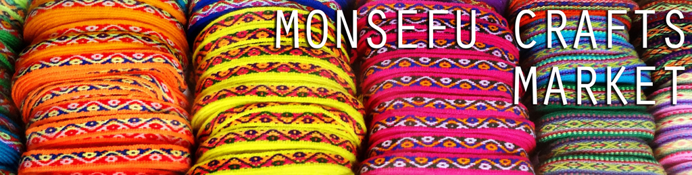
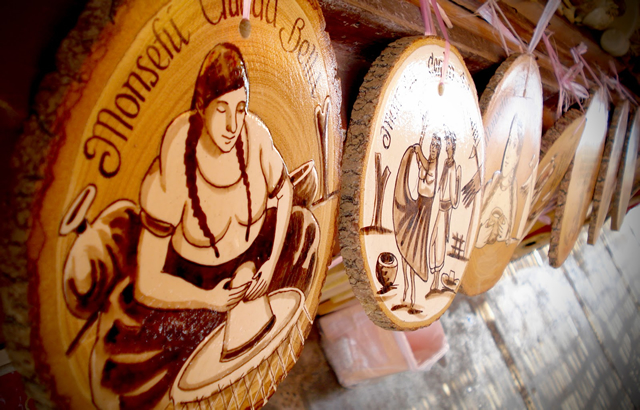
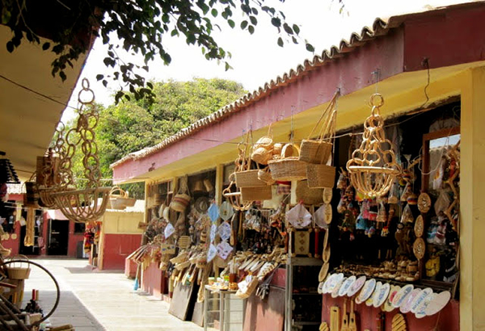

Artisan Central of Lambayeque
Located in the tiny artisan town of Monsefú, this market sells many of the handicrafts famous to the area. This market is found year-round in the perfect location: close to Monsefú’s Plaza de Armas (as well as a great sweets shop, or “dulceria” in the plaza). Near the end of July, Monsefú holds a nationally-acclaimed fair called FEXTICUM, a tourism trade show that highlights quality goods made of straw, cotton, yarn, and other products made by people all around Peru.
| Location |
| Along Avenida Venezuela in Monsefú. Monsefú is a town approximately 5 miles (8 km) from Chiclayo, about a 10-minute drive. |

